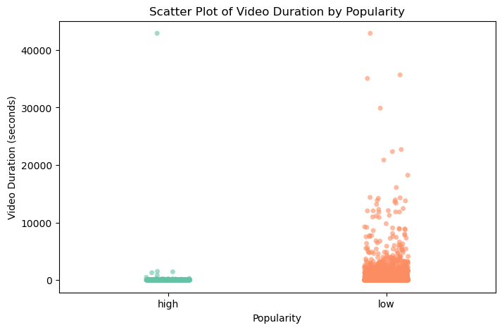
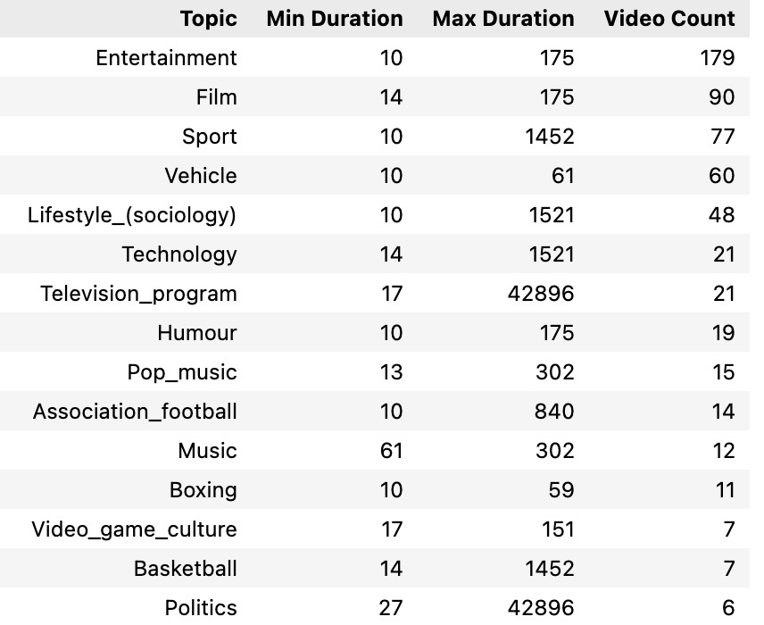

Final Report Summary
Details found on [https://yuxishen.georgetown.domains/portfolio_project/]
Executive Summary
This report explores the key factors influencing YouTube video popularity, providing insights for content creators, marketers, and advertisers. By analyzing video topics, duration, engagement rates, and audience behavior, this study helps optimize content strategies to increase views, engagement, and ad revenue.
Key Insights
1. Shorter Videos Gain More Views
Popular videos (6M+ views) are typically under 10 minutes, as shorter content retains audience attention better. Longer videos perform well only in tutorials or background music. Recommendation: Focus on concise, engaging videos to improve retention and visibility.
2. Video Topics Overlap Significantly
Entertainment and gaming dominate high-engagement videos, often overlapping. Recommendation: Leverage trending topics and multi-category tagging to enhance discoverability.
Unsupervised Learning Insights
1. Clustering & Dimensionality Reduction
K-Means grouped videos by engagement; DBSCAN detected viral outliers; t-SNE provided clearer visualizations than PCA. Takeaway: Clustering segments videos for targeted strategies.
Supervised Learning Insights
1. Predicting Video Popularity
Gradient Boosting performed best (RMSE: 0.249, R²: 0.771). Key Predictors: (1) Like Count – Strongest engagement signal. (2) Duration – Shorter videos perform better. (3) Topic Category – Influences discoverability.
2. Classifying Video Popularity
Gradient Boosting achieved 95.1% accuracy (binary classification) and 85.3% accuracy (multi-class classification). Key Takeaway: Likes, duration, and content category are the strongest popularity indicators.
Converting Audiences to Subscribers
Likes, shares, and views strongly correlate, but comment count is weakly related, suggesting passive engagement. Recommendation: Use CTAs to increase interaction, optimize intros to capture attention within 30 seconds, and add visual engagement prompts.
Business Implications
For Content Creators: they should rioritize shorter, engaging content aligned with trends. Use CTAs and visual prompts to drive interaction. Apply multi-category tagging to broaden reach. The advisors should target high-engagement videos for ad placements. Partner with influential YouTubers in gaming and entertainment.
Recommendations
For Content Creators: 1. Encourage Engagement: Use CTAs to prompt likes, comments, and subscriptions. 2. Engaging Intros: Capture attention in the first 30 seconds to reduce drop-off. 3. Leverage Trends: Align content with trending entertainment and gaming topics. 4. Optimize Video Length: Keep videos under 10 minutes for maximum engagement.
For Advertisers: 1. Collaborate with Engaged Creators: Partner with YouTubers who foster audience interaction. 2. Target High-Engagement Content: Focus ad placements on videos with strong engagement metrics.
Answering Research Questions
1. How can YouTube videos be categorized based on engagement patterns?
Videos were classified as highly popular (6M+ views) or low-popularity, spanning multiple topics. Using unsupervised learning, K-Means separated high and low-engagement videos, DBSCAN identified viral outliers, Agglomerative Clustering revealed subcategories, and BIRCH efficiently grouped content. Engagement-driven videos cluster within entertainment and gaming, while niche content attracts dedicated audiences. Viral videos appear as outliers, suggesting external factors like trends and social media boosts contribute to their success.
2. What is the relationship between video duration and popularity?
Most popular videos are under 30 minutes, with a strong concentration below 10 minutes. Shorter videos retain attention better, increasing engagement. Entertainment and gaming thrive in shorter formats, while longer durations suit educational content. Music videos show mixed trends—shorter ones generate high engagement, while longer videos work as background content. Optimal duration depends on content type and audience expectations.
3. How does user engagement (likes, comments) correlate with video popularity?
Like count strongly correlates with views, serving as a key engagement metric. However, comment count shows a weaker correlation, indicating passive consumption. Privacy concerns and content type influence comment behavior. While YouTube relies on likes, comments, and watch time, additional indicators like audience retention and rewatch rates should be considered. Creators can enhance engagement by prompting comments through interactive content and direct CTAs.
4. How should advertisers select creators for maximum effectiveness?
Advertisers should prioritize creators with high like-to-view ratios, as this signals strong engagement. Entertainment and gaming content consistently attract large audiences, making them ideal for ad placements. Shorter videos reduce ad-skipping rates, improving effectiveness. Many successful YouTubers expand to platforms like TikTok, increasing cross-platform reach. Strategic partnerships with engaged creators and targeted ad placements maximize ROI.
5. Can we predict video popularity trends based on content categories?
Predictive models show content category is a strong indicator of popularity. Entertainment and gaming consistently attract large audiences, while trending topics and viral challenges boost visibility. Engagement patterns and keyword trends help forecast content performance. Clustering identifies emerging subcategories, enabling data-driven content strategy adjustments. Tools like Google Trends and YouTube Analytics allow real-time optimization, helping creators maximize reach and engagement.
6. What are the most important features influencing YouTube video popularity?
The three strongest predictors are like count, duration, and topic category. Like count is the best engagement metric, directly influencing video visibility in YouTube’s recommendation system. Shorter videos tend to perform better in entertainment and viral content, while longer videos succeed in educational niches. Topic category affects audience reach, with entertainment and gaming drawing the most engagement. Creators should maximize engagement through CTAs, optimize video length based on audience expectations, and target high-engagement content categories.
Final Thoughts
This research highlights engagement-driven strategies as key to YouTube success. The recommendation system favors high-interaction videos, meaning creators should focus on increasing engagement through CTAs, aligning content with trends, and adapting to shifting audience interests. By applying these strategies, content creators can enhance their visibility, and advertisers can effectively target high-performing content.
Appendix

